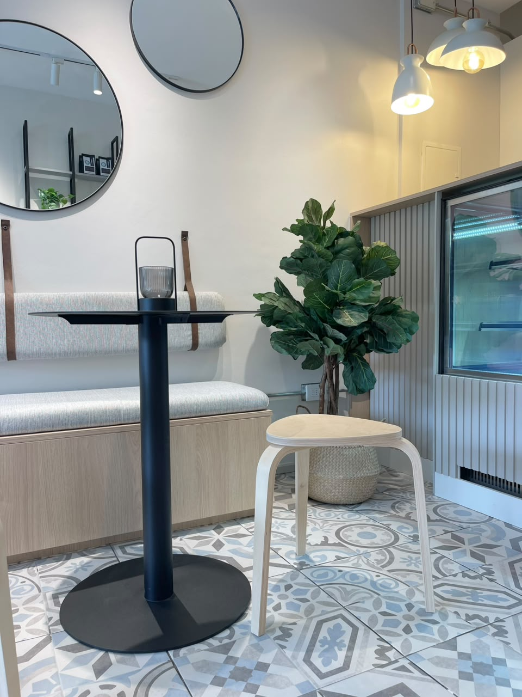
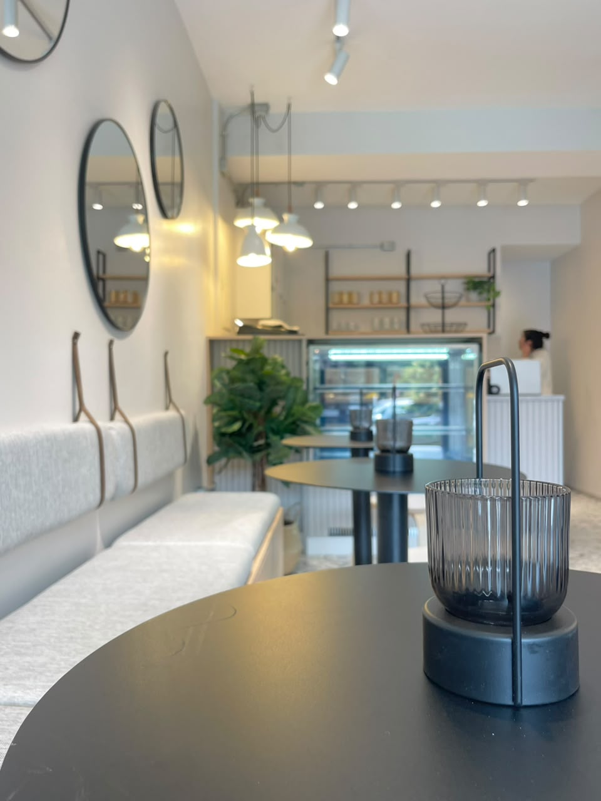
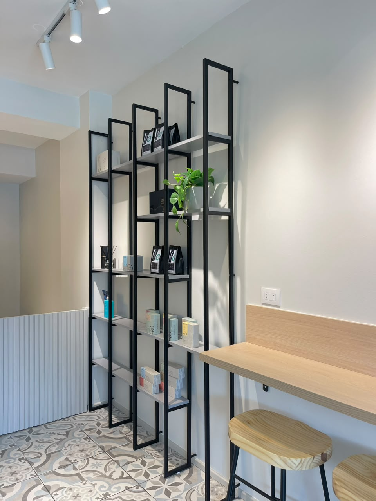
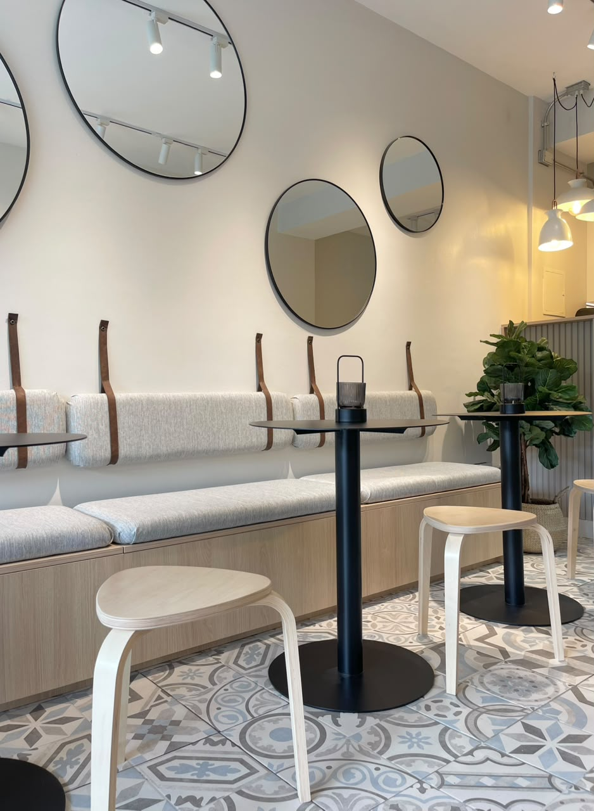
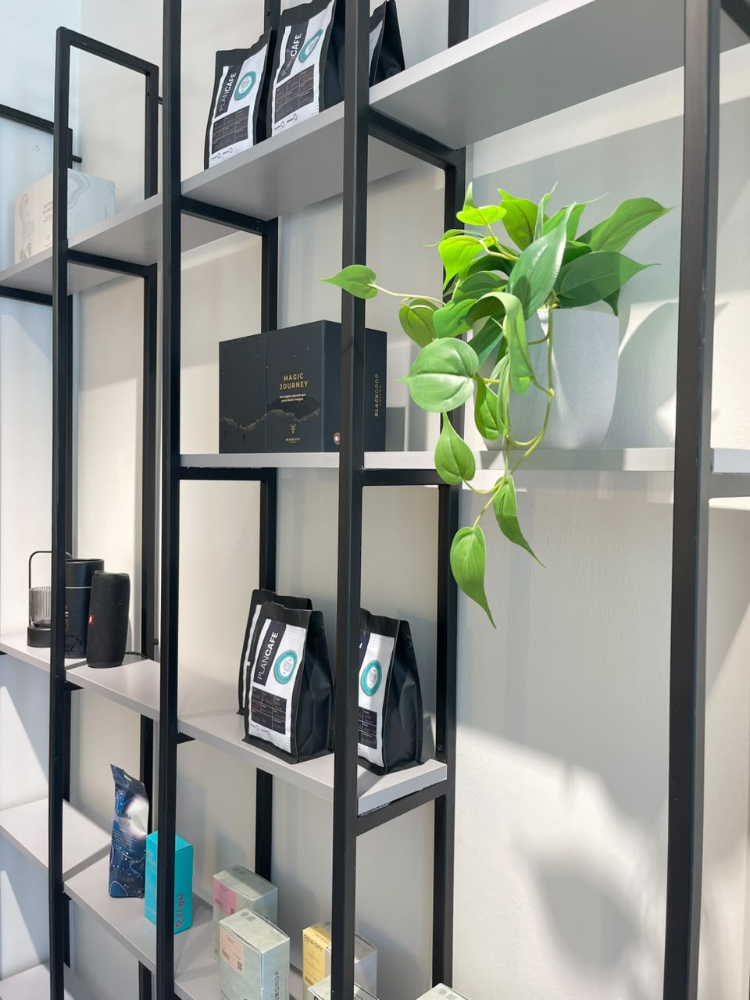

Plan Café
Un interior de escala íntima, donde las curvas, la iluminación puntual y una paleta sobria construyen una experiencia cálida y contemporánea.

El proyecto
Detalles que invitan a habitar el momento.
El espacio se organiza a partir de una barra central, áreas de encuentro y una secuencia de iluminación que acompaña el recorrido. Es un proyecto comercial diseñado para hacer de la permanencia una parte esencial de la experiencia.
El registro visual muestra las decisiones espaciales y de interiorismo. Las especificaciones técnicas se añadirán cuando sean revisadas por el estudio.





